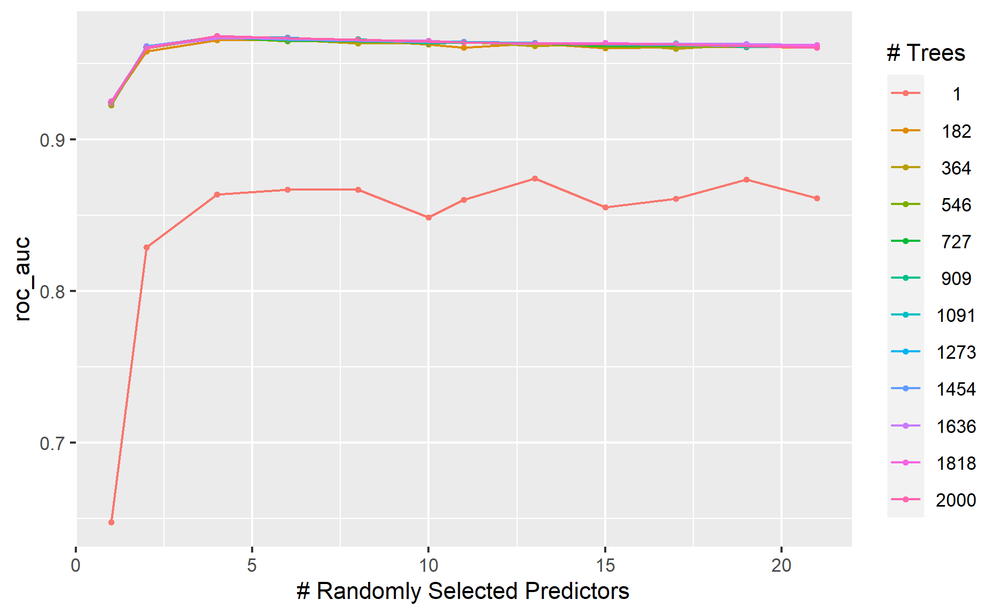
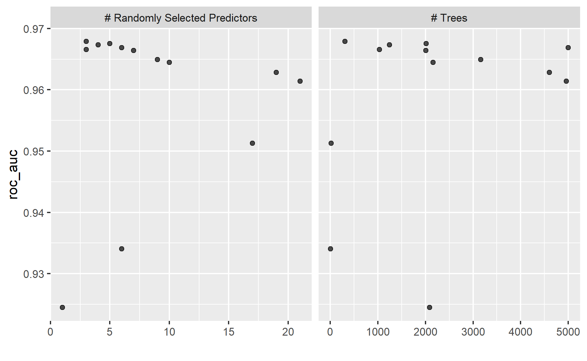
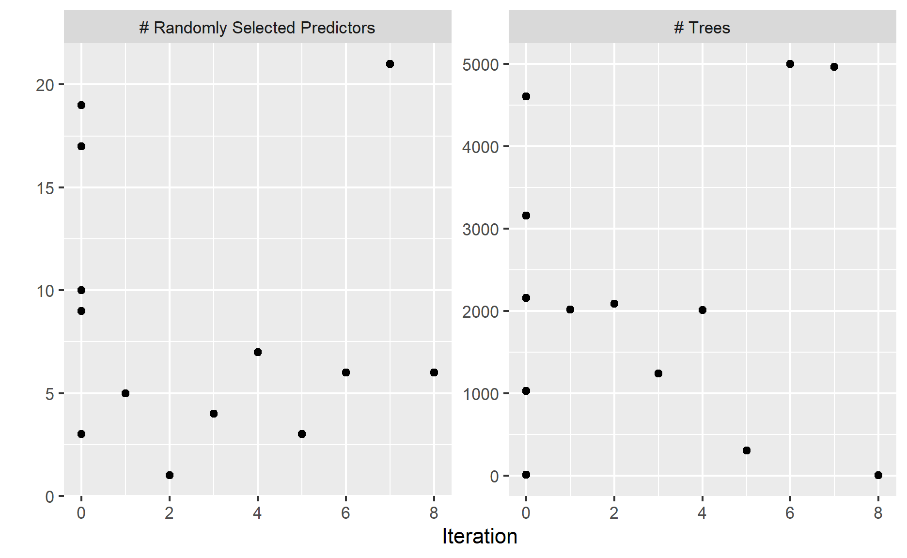
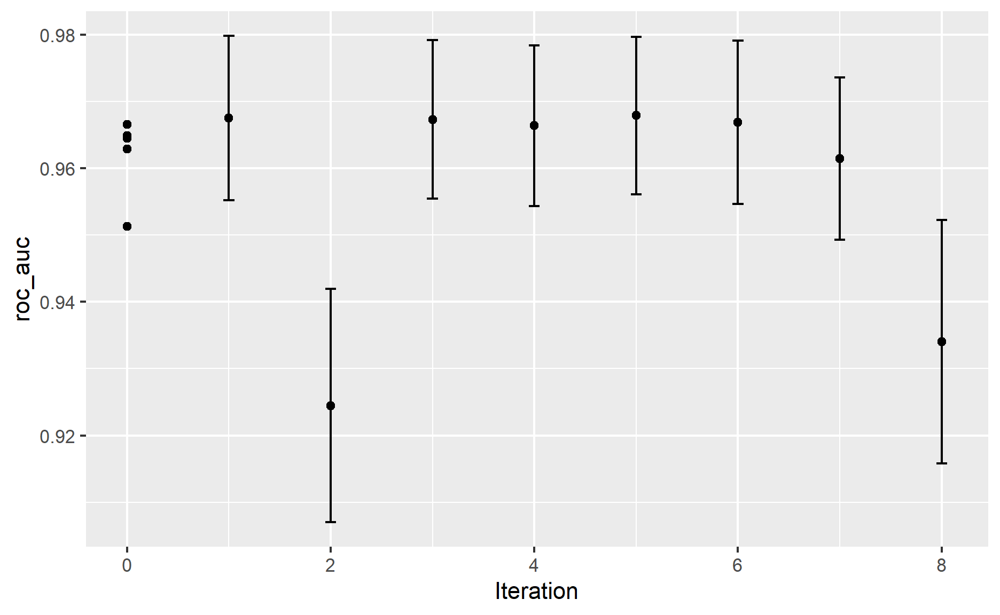

In this post, I will be exploring bayes optimization.
This post is the continuation of my previous post on hyperparameter tuning.

Photo by Anne Nygard on Unsplash
Recap on Hyperparameters tuning
As discussed in my previous post, the hyperparameters tuning task includes the following 4 parts (Koehrsen 2018):
Objective function: a function that takes in hyperparameters and returns a score we are trying to minimize or maximize
Domain: the set of hyperparameter values over which we want to search
Algorithm: method for selecting the next set of hyperparameters to evaluate in the objective function
Results history: data structure containing each set of hyperparameters and the resulting score from the objective function
In this post, I will be exploring bayes optimization (i.e.one of the algorithm).
Meanwhile, I will perform regular grid search so that I can compare how bayes optimization is different from regular grid search.
Optimization Methods
Regular Grid Search
This is one of the common hyperparameter searches one would learn when he/she embarks on data science journey.
Under this method, all the combinations created in the grid search domain will be run to obtain the model results.
Once this is done, the model results under different hyperparameter sets are compared to obtain the best hyperparameter sets that provide the best model performance.
Note that this is an uninformed searching method. The different model tuning results in each iteration do not affect each other.
The issue with such an approach is the algorithm could be spending unnecessary time testing the hyperparameter regions that are likely to be not accurate based on the previous few attempts.
Bayes Optimization
Bayes optimization is a sequential method that uses a model to predict new candidate parameters for assessment (RStudio).
The basic idea is to spend a little more time selecting the next hyperparameters to make fewer calls to the objective function (Koehrsen 2018).
Bayesian optimization approaches this task through a method known as surrogate optimization, where surrogate function is an approximation of the objective function (Ye 2020).
Below are how the bayes optimization works (Ye 2020):
Initialize a Gaussian Process surrogate function prior distribution.
Choose several data points x such that the acquisition function a(x) operating on the current prior distribution is maximized.
Evaluate the data points x in the objective cost function c(x) and obtain the results, y.
Update the Gaussian Process prior distribution with the new data to produce a posterior (which will become the prior in the next step).
Repeat steps 25 for several iterations.
Interpret the current Gaussian Process distribution (which is very cheap to do) to find the global minima.
Later in this post, I will be showing the created grids under different methods.
Demonstration
In this demonstration, I will be using the employee attrition dataset from Kaggle.
Nevertheless, lets begin the demonstration!
Setup the environment
First, I will set up the environment by calling all the packages I need for the analysis later.
packages <- c('tidyverse', 'readr', 'tidymodels', 'themis', 'doParallel',
'tictoc')
for(p in packages){
if(!require (p, character.only = T)){
install.packages(p)
}
library(p, character.only = T)
}
For this demonstration, we will be using an R package called
tune to tune the hyperparameters.
tune package supports both regular grid search method
and bayes optimization.
Import the data
First I will import the data into the environment.
df <- read_csv("https://raw.githubusercontent.com/jasperlok/my-blog/master/_posts/2022-03-12-marketbasket/data/general_data.csv") %>%
select(-c(EmployeeCount, StandardHours, EmployeeID))
I will set the random seed for reproducibility.
set.seed(1234)
Build a model
For simplicity, I will reuse the random forest model building code I wrote in my previous post.
You can refer to my previous post for the explanations of the model building.
df_split <- initial_split(df,
prop = 0.6,
strata = Attrition)
df_train <- training(df_split)
df_test <- testing(df_split)
df_folds <- vfold_cv(df_train, strata = Attrition)
ranger_recipe <-
recipe(formula = Attrition ~ .,
data = df_train) %>%
step_impute_mean(NumCompaniesWorked,
TotalWorkingYears) %>%
step_nzv(all_predictors()) %>%
step_dummy(all_nominal_predictors()) %>%
step_upsample(Attrition)
ranger_spec <-
rand_forest(trees = tune(),
mtry = tune()) %>%
set_mode("classification") %>%
set_engine("ranger")
ranger_workflow <-
workflow() %>%
add_recipe(ranger_recipe) %>%
add_model(ranger_spec)
Creating Grid
Next, I will start creating a grid for the regular grid search later.
Refer to my previous post if you want to find more on different ways of creating the grids for hyperparameter tuning.
Tuning hyperparameters
Once the values of hyperparameters to be tuned are created, we can start tuning the hyperparameters.
In this post, I will be trying both regular grid search and bayes optimization in searching for the best pairs of hyperparameters.
Regular Grid Search
In this sub-section, I will perform regular grid search to find the best combinations of hyperparameters.
I will also measure the time taken to find the best hyperparameters.
tic()
ranger_tune_regular <- tune_grid(ranger_workflow,
resample = df_folds,
metrics = metric_set(roc_auc),
grid = dials_regular)
results_regular <- toc()
2249.47 sec elapsedtune package also offers a function to allow the users
to plot the model performance against the parameters.
autoplot(ranger_tune_regular)

As shown in the graph, AUC tends to be low when the number of randomly selected predictors and number of trees is low. AUC results are quite comparable when the number of randomly selected predictors and the number of trees increases.
Bayes Optimization
Next, I will perform bayes optimization so that I can compare how this optimization approach is different from the regular grid search approach.
Parameters
To perform Bayes optimization, we need to first define the hyperparameter value range.
rf_param <-
ranger_workflow %>%
parameters() %>%
finalize(df_train)
We could check the value ranges by calling the object
item within the rf_param we have created earlier.
rf_param$object
[[1]]
# Randomly Selected Predictors (quantitative)
Range: [1, 21]
[[2]]
# Trees (quantitative)
Range: [1, 2000]Instead of using the default values from the function, we can change
the value range by using update function.
As you can see below, the value range of trees have updated.
rf_param$object
[[1]]
# Randomly Selected Predictors (quantitative)
Range: [1, 21]
[[2]]
# Trees (quantitative)
Range: [1, 5000]Tuning Hyperparameters
Once the parameter value ranges are defined, we can start performing bayes optimization.
tic()
ranger_tune_bayes <- tune_bayes(ranger_workflow,
resample = df_folds,
param_info = rf_param,
metrics = metric_set(roc_auc),
initial = 5,
iter = 8,
control = control_bayes(no_improve = 5,
verbose = FALSE,
save_pred = TRUE))
Note that the initial refers to how many set of
hyperparameters should be tried before the iterations.
As recommended by the author on the documentation page, the number of initial results is suggested to be greater than the number of parameters being optimized.
Since I am tuning two hyperparameters, hence I have set
initial to be 5.
results_bayes <- toc()
474.47 sec elapsedSimilarly, we can plot the model performance under different
hyperparameters by using autoplot function.
autoplot(ranger_tune_bayes)

Note that the default value for type argument is
marginals.
As we can observe from the graph above, the graph contains fewer dots than the graph for a regular grid search. This is because this approach will stop searching in the region where the hyperparameters do not provide a more accurate result.
For example, as we can see in the graph, the model accuracy tends to be low when the value for number of randomly selected predictors (i.e.mtry) is low regardless of the number of trees.
This would reduce the time taken to obtain the hyperparameter sets that provide the best model results.
On the other hand, the traditional grid search method computes the model performance for every single hyperparameter defined in the created grid as shown below, making this computation method very computation expensive.
To illustrate this, I will first use collect_metrics
function to gather the model performance and sort the iteration in
ascending order.
ranger_tune_bayes %>%
collect_metrics() %>%
arrange(.iter)
# A tibble: 13 x 9
mtry trees .metric .estimator mean n std_err .config .iter
<int> <int> <chr> <chr> <dbl> <int> <dbl> <chr> <int>
1 9 3160 roc_auc binary 0.965 10 0.00544 Preproces~ 0
2 17 15 roc_auc binary 0.947 10 0.00886 Preproces~ 0
3 19 4606 roc_auc binary 0.962 10 0.00557 Preproces~ 0
4 3 1030 roc_auc binary 0.968 10 0.00506 Preproces~ 0
5 10 2156 roc_auc binary 0.964 10 0.00556 Preproces~ 0
6 5 2079 roc_auc binary 0.968 10 0.00527 Iter1 1
7 1 1838 roc_auc binary 0.926 10 0.00830 Iter2 2
8 4 1339 roc_auc binary 0.968 10 0.00521 Iter3 3
9 7 2201 roc_auc binary 0.967 10 0.00524 Iter4 4
10 21 4960 roc_auc binary 0.961 10 0.00553 Iter5 5
11 6 4998 roc_auc binary 0.967 10 0.00528 Iter6 6
12 13 4987 roc_auc binary 0.963 10 0.00559 Iter7 7
13 12 4 roc_auc binary 0.932 10 0.00696 Iter8 8I will also collect the model performance under regular grid search.
ranger_tune_regular %>%
collect_metrics()
# A tibble: 144 x 8
mtry trees .metric .estimator mean n std_err .config
<int> <int> <chr> <chr> <dbl> <int> <dbl> <chr>
1 1 1 roc_auc binary 0.658 10 0.0195 Preprocessor1_M~
2 1 182 roc_auc binary 0.927 10 0.00948 Preprocessor1_M~
3 1 364 roc_auc binary 0.924 10 0.00829 Preprocessor1_M~
4 1 546 roc_auc binary 0.923 10 0.00789 Preprocessor1_M~
5 1 727 roc_auc binary 0.926 10 0.00839 Preprocessor1_M~
6 1 909 roc_auc binary 0.923 10 0.00831 Preprocessor1_M~
7 1 1091 roc_auc binary 0.927 10 0.00881 Preprocessor1_M~
8 1 1273 roc_auc binary 0.925 10 0.00854 Preprocessor1_M~
9 1 1454 roc_auc binary 0.925 10 0.00832 Preprocessor1_M~
10 1 1636 roc_auc binary 0.926 10 0.00835 Preprocessor1_M~
# ... with 134 more rowsLets take a look at how the model performances differ between regular grid search and bayes optimization.
The model performance also looks quite similar between the regular grid search method and bayes optimization method.
tibble() %>%
bind_rows(show_best(ranger_tune_regular, n = 1) %>%
mutate(dials_method = "Regular Grid Search")) %>%
bind_rows(show_best(ranger_tune_bayes, n = 1) %>%
mutate(dials_method = "Bayes Optimization")) %>%
arrange(desc(mean)) %>%
select(c(dials_method, mean))
# A tibble: 2 x 2
dials_method mean
<chr> <dbl>
1 Regular Grid Search 0.968
2 Bayes Optimization 0.968However, bayes optimization uses lesser time to obtain similar model performance as compared to regular grid search.
There is about 79% reduction in time spent in searching the optimal hyperparameters when bayes optimization is used.
This shows how bayes optimization could spend less time searching the optimal hyperparameters.
Also, if we take a look at the model results from bayes optimization, the results show that the algorithm didnt spend much time in searching the hyperparameters at the region where mtry value is low.
ranger_tune_bayes %>%
collect_metrics() %>%
arrange(.iter)
# A tibble: 13 x 9
mtry trees .metric .estimator mean n std_err .config .iter
<int> <int> <chr> <chr> <dbl> <int> <dbl> <chr> <int>
1 9 3160 roc_auc binary 0.965 10 0.00544 Preproces~ 0
2 17 15 roc_auc binary 0.947 10 0.00886 Preproces~ 0
3 19 4606 roc_auc binary 0.962 10 0.00557 Preproces~ 0
4 3 1030 roc_auc binary 0.968 10 0.00506 Preproces~ 0
5 10 2156 roc_auc binary 0.964 10 0.00556 Preproces~ 0
6 5 2079 roc_auc binary 0.968 10 0.00527 Iter1 1
7 1 1838 roc_auc binary 0.926 10 0.00830 Iter2 2
8 4 1339 roc_auc binary 0.968 10 0.00521 Iter3 3
9 7 2201 roc_auc binary 0.967 10 0.00524 Iter4 4
10 21 4960 roc_auc binary 0.961 10 0.00553 Iter5 5
11 6 4998 roc_auc binary 0.967 10 0.00528 Iter6 6
12 13 4987 roc_auc binary 0.963 10 0.00559 Iter7 7
13 12 4 roc_auc binary 0.932 10 0.00696 Iter8 8The algorithm also tries 5 different sets of hyperparameters before
the algorithm iterates on the hyperparameters as the
initial is set to be 5 in the function.
The type argument in autoplot function also
allows two other values, i.e.parameters and performance.
When parameters is selected, the graph shows us how the hyperparameters change over iterations.
autoplot(ranger_tune_bayes, type = "parameters")

On the contrary, if the performance is being passed into
type argument, the graph shows the model performance over
iterations.
autoplot(ranger_tune_bayes, type = "performance")

Conclusion
Thats all for the day!
In this post, the demonstration barely scratched the surface of what we could do with bayes optimization. There is so much more to bayes optimization.
I will leave the remaining functionality of bayes optimization for the next post.
Thanks for reading the post until the end.
Feel free to contact me through email or LinkedIn if you have any suggestions on future topics to share.
Till next time, happy learning!
Photo by Alexis Baydoun on Unsplash